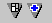
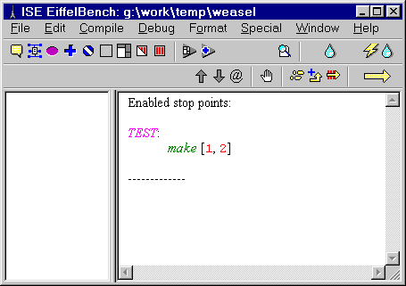
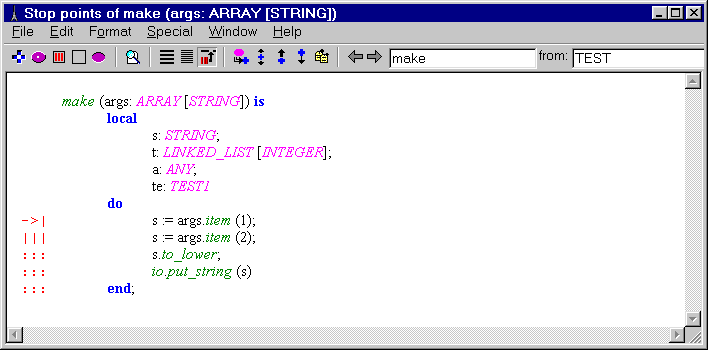

|
Debugging facilities
1 INTRODUCTIONTo debug an Eiffel system and, more generally, monitor its execution, you will use a combination of:
2 ATTACHED TOOLSBesides ordinary Feature and Object Tools, which you will have to retarget explicitly to a certain feature or object, you can use attached tools, which will reflect the state of the execution. By default, on screen larger than 800x600 they will be displayed as shown below. There are 2 buttons in the middle of the command bar in the Project Tool :
When displayed, the Feature tool will, whenever execution stops, show the current execution position, using the Stop Points format as shown below:
3 AN EXAMPLE DEBUGGING SESSIONTo put a stop point on procedure :
 At each stage, the red arrow -> shows the instruction that will be executed next.  To terminate execution :
4 STOP POINTS AND STOPPABLE ROUTINESA routine is stoppable if you have put a stop point on the routine as a whole or one of its instructions. Even if you remove the stop point later on, the routine remains stoppable. Stoppable routines are important because the Single-Step and To End of Routine execution formats apply to these routines. For example if you resume execution in Single-Step format it will single-step through the instructions of the first stoppable routine that it encounters.
5 INTERRUPTING AND TERMINATING EXECUTION
You can click the Interrupt button (the little bomb) to interrupt execution at the first applicable instruction of the first stoppable routine to be encountered.
6 SETTING AND REMOVING STOP POINTSYou set a stop point by drag-and-dropping an appropriate element to a Stop Point hole . The elements that can be drag-and-dropped in this manner are:
-Entire routines.
If a stop point has already been set on instruction, the three dots ... are replaced by three vertical bars |||, as illustrated by the last instruction above. When you set or remove a stop point, the Project Tool display reflects the current Stop Point situation. The Stop Point hole (which you find in both the Project Tool and Feature Tools) acts as a toggle: to remove a stop point, drag-and-drop it again to the hole. The source of the drag-and-drop can be in a Class Tool (for a routine), a stop point marker (... or |||) in a Feature Tool, or a stop point indicator appearing in the Project Tool as shown in the last figure.
7 EXECUTION INFORMATIONWhen you click the Run button, execution starts or, if previously interrupted, restarts. If it proceeds with interruption and terminates, the message `System terminated' will appear in the Project Tool. But any of the following events may cause execution to stop before termination:
-You click Interrupt .
In any case, the display will show the execution status and the call stack. All the elements shown are clickable. The local entities of all the routines on the call stack are accessible; to move up and down the stack, use Up and Down buttons.
8 LIMITATION IN MULTITHREADED MODEFor now the EIFFEL debugger is not fully multithreaded safe. it is possible to put a break-point in any class which doesn't inherit from the class THREAD, if it is not called in the execution of a thread.
9 MORE INFORMATION
For more information, visit our web page: |